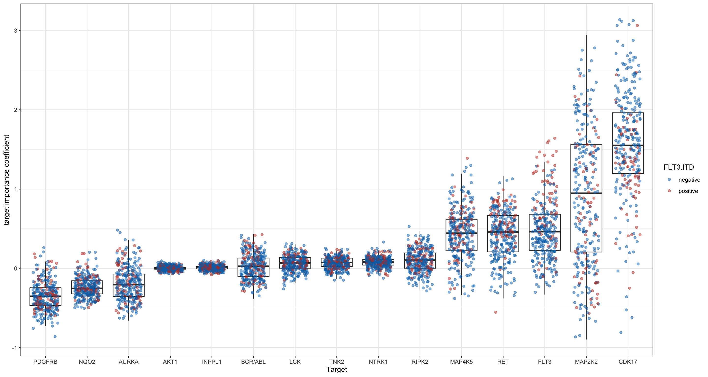
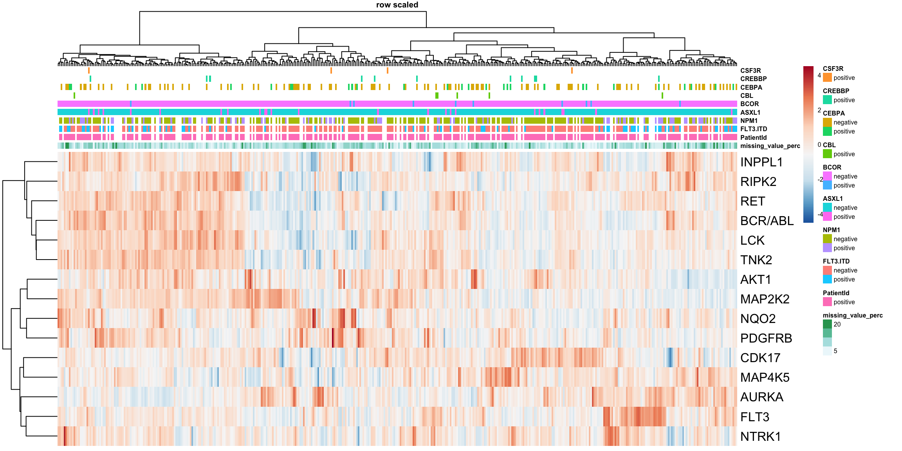
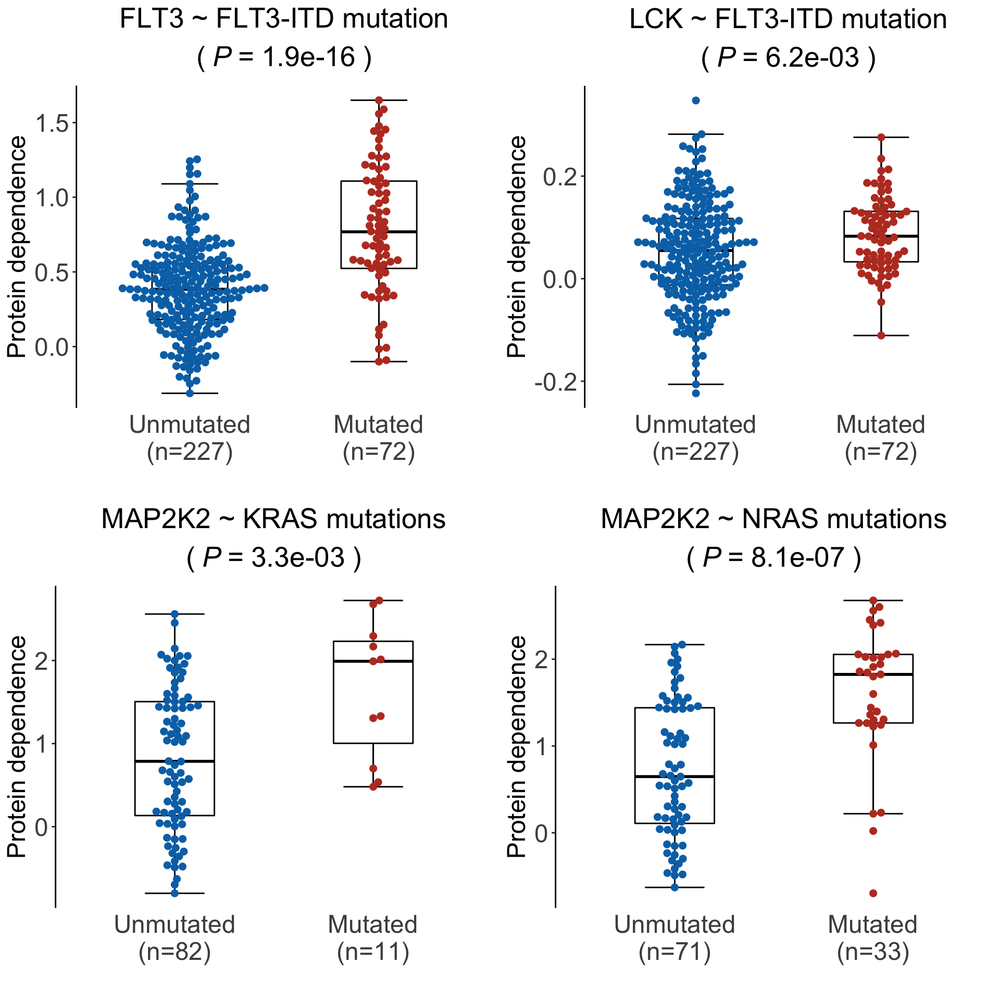

Last updated: 2022-01-11
Checks: 6 1
Knit directory: DepInfeR/analysis/
This reproducible R Markdown analysis was created with workflowr (version 1.7.0). The Checks tab describes the reproducibility checks that were applied when the results were created. The Past versions tab lists the development history.
The R Markdown is untracked by Git. To know which version of the R Markdown file created these results, you’ll want to first commit it to the Git repo. If you’re still working on the analysis, you can ignore this warning. When you’re finished, you can run wflow_publish to commit the R Markdown file and build the HTML.
Great job! The global environment was empty. Objects defined in the global environment can affect the analysis in your R Markdown file in unknown ways. For reproduciblity it’s best to always run the code in an empty environment.
The command set.seed(20211005) was run prior to running the code in the R Markdown file. Setting a seed ensures that any results that rely on randomness, e.g. subsampling or permutations, are reproducible.
Great job! Recording the operating system, R version, and package versions is critical for reproducibility.
Nice! There were no cached chunks for this analysis, so you can be confident that you successfully produced the results during this run.
Great job! Using relative paths to the files within your workflowr project makes it easier to run your code on other machines.
Great! You are using Git for version control. Tracking code development and connecting the code version to the results is critical for reproducibility.
The results in this page were generated with repository version 43be8a7. See the Past versions tab to see a history of the changes made to the R Markdown and HTML files.
Note that you need to be careful to ensure that all relevant files for the analysis have been committed to Git prior to generating the results (you can use wflow_publish or wflow_git_commit). workflowr only checks the R Markdown file, but you know if there are other scripts or data files that it depends on. Below is the status of the Git repository when the results were generated:
Ignored files:
Ignored: .DS_Store
Ignored: .Rhistory
Ignored: .Rproj.user/
Ignored: analysis/.DS_Store
Ignored: analysis/.Rhistory
Ignored: analysis/analysis_RNAseq_cache/
Ignored: data/.DS_Store
Ignored: output/.DS_Store
Untracked files:
Untracked: analysis/analysis_EMBL2016.Rmd
Untracked: analysis/analysis_GDSC.Rmd
Untracked: analysis/analysis_RNAseq.Rmd
Untracked: analysis/analysis_beatAML.Rmd
Untracked: analysis/process_EMBL2016.Rmd
Untracked: analysis/process_GDSC.Rmd
Untracked: analysis/process_beatAML.Rmd
Untracked: analysis/process_kinobeads.Rmd
Untracked: code/utils.R
Untracked: data/BeatAML/
Untracked: data/EMBL2016/
Untracked: data/GDSC/
Untracked: data/Kinobeads/
Untracked: data/RNAseq/
Untracked: manuscript/
Untracked: output/BeatAML_result.RData
Untracked: output/EMBL_result.RData
Untracked: output/EMBL_resultSub.RData
Untracked: output/GDSC_result.RData
Untracked: output/allTargets.rds
Untracked: output/inputs_BeatAML.RData
Untracked: output/inputs_EMBL.RData
Untracked: output/inputs_GDSC.RData
Unstaged changes:
Modified: README.md
Modified: _workflowr.yml
Modified: analysis/_site.yml
Deleted: analysis/about.Rmd
Modified: analysis/index.Rmd
Deleted: analysis/license.Rmd
Deleted: output/README.md
Note that any generated files, e.g. HTML, png, CSS, etc., are not included in this status report because it is ok for generated content to have uncommitted changes.
There are no past versions. Publish this analysis with wflow_publish() to start tracking its development.
Packages
library(DepInfeR)
library(RColorBrewer)
library(pheatmap)
library(ggbeeswarm)
library(ggrepel)
library(tidyverse)
source("../code/utils.R")
knitr::opts_chunk$set(dev = c("png","pdf"))load("../output/inputs_BeatAML.RData")Drug-target
dim(tarMat_BeatAML)[1] 61 112Drug-sample (viability matrix)
dim(viabMat_BeatAML)[1] 61 421Perform multivariant LASSO regression based on a drug-protein affinity matrix and a drug response matrix.
This chunk can take a long time to run. Therefore we will save the result for later use to save time.
set.seed(333)
result <- runLASSOregression(TargetMatrix = tarMat_BeatAML , ResponseMatrix = viabMat_BeatAML)
#remove targets that were never selected
useTar <- rowSums(result$coefMat) != 0
result$coefMat <- result$coefMat[useTar,]
#save intermediate results
save(result, file = "../output/BeatAML_result.RData")Load the saved result
load("../output/BeatAML_result.RData")Number of selected targets
nrow(result$coefMat)[1] 15This plot shows the overall importance of each of the targets. It shows how effective targeting this protein by drugs is in the disease in general and displays the variability between the different samples.
plotTab <- result$coefMat %>% data.frame() %>%
rownames_to_column("target") %>% gather(key = "labID", value = "coef",-target) %>%
group_by(target) %>% mutate(meanCoef = mean(coef)) %>% arrange(meanCoef) %>% ungroup() %>%
mutate(target = factor(target, levels = unique(target)))
plotTab$labID <- gsub("X","",plotTab$labID)
plotTab <- mutate(plotTab, FLT3.ITD = annotation_beatAML[labID,]$FLT3.ITD)
ggplot(plotTab, aes(x=target, y = coef)) + geom_boxplot(outlier.shape = NA) +
geom_point(aes(col = FLT3.ITD), alpha =0.5, position=position_jitter(h=0.05, w=0.3)) +
scale_color_manual(values= c("negative"= "#0072B5FF", "positive" = "#BC3C29FF"), na.translate=FALSE) +
theme(axis.text.x = element_text(angle = 90, hjust=1, vjust=0.5)) + ylab("target importance coefficient") + xlab("Target") +
theme_bw()Warning: Removed 1830 rows containing missing values (geom_point).
The target importance coefficient matrix can be nicely visualized in a heatmap. The more positive the coefficient, the more essential this target is for the survival of the cancer cell. Values closer to zero indicate a lower importance of that target. Negative coefficient values speak for a target which is beneficial for the cancer cell when absent or inhibited.
plotTab <- result$coefMat
#Row normalization while keeping sign
plotTab_scaled <- scale(t(plotTab), center = FALSE, scale= TRUE)
plotTab <- t(plotTab_scaled)
annoCol <- annotation_beatAML[1:10]
rownames(annoCol) <- paste0("X", rownames(annoCol))
pheatmap(plotTab,
color=colorRampPalette(rev(brewer.pal(n = 7, name ="RdBu")), bias= 1.2)(100),
annotation_col = annoCol,
#annotation_colors = annoColor,
clustering_method = "ward.D2", scale = "row",
show_colnames = FALSE, main = "row scaled", fontsize = 6, fontsize_row = 12)
Prepare genomic background table
sample_anno_final <- dplyr::select(annotation_beatAML, c("FLT3.ITD", "NPM1","CEBPA", "DNMT3A", "IDH1", "IDH2", "KRAS", "NRAS", "RUNX1", "TP53")) %>%
as.matrix()
sample_anno_final[sample_anno_final %in% "positive"] <- 1
sample_anno_final[sample_anno_final %in% "negative"] <- 0
rownames(sample_anno_final) <- paste0("X", rownames(sample_anno_final))
sample_anno_final <- as.data.frame(sample_anno_final)Association test for target importance matrix
testRes <- diffImportance(result$coefMat, sample_anno_final)Boxplot of significant pairs
pList <- plotDiffBox(testRes, result$coefMat, sample_anno_final, fdrCut = 0.05)Plot examples of significant associations for supplementary figures
cowplot::plot_grid(pList$FLT3_FLT3.ITD, pList$LCK_FLT3.ITD,
pList$MAP2K2_KRAS, pList$MAP2K2_NRAS)
sessionInfo()R version 4.1.2 (2021-11-01)
Platform: x86_64-apple-darwin17.0 (64-bit)
Running under: macOS Big Sur 10.16
Matrix products: default
BLAS: /Library/Frameworks/R.framework/Versions/4.1/Resources/lib/libRblas.0.dylib
LAPACK: /Library/Frameworks/R.framework/Versions/4.1/Resources/lib/libRlapack.dylib
locale:
[1] en_US.UTF-8/en_US.UTF-8/en_US.UTF-8/C/en_US.UTF-8/en_US.UTF-8
attached base packages:
[1] stats graphics grDevices utils datasets methods base
other attached packages:
[1] forcats_0.5.1 stringr_1.4.0 dplyr_1.0.7 purrr_0.3.4
[5] readr_2.1.1 tidyr_1.1.4 tibble_3.1.6 tidyverse_1.3.1
[9] ggrepel_0.9.1 ggbeeswarm_0.6.0 ggplot2_3.3.5 pheatmap_1.0.12
[13] RColorBrewer_1.1-2 DepInfeR_0.1.0
loaded via a namespace (and not attached):
[1] matrixStats_0.61.0 fs_1.5.2 lubridate_1.8.0 doParallel_1.0.16
[5] httr_1.4.2 rprojroot_2.0.2 tools_4.1.2 backports_1.4.1
[9] doRNG_1.8.2 bslib_0.3.1 utf8_1.2.2 R6_2.5.1
[13] vipor_0.4.5 DBI_1.1.2 colorspace_2.0-2 withr_2.4.3
[17] tidyselect_1.1.1 compiler_4.1.2 git2r_0.29.0 glmnet_4.1-3
[21] cli_3.1.0 rvest_1.0.2 xml2_1.3.3 labeling_0.4.2
[25] sass_0.4.0 scales_1.1.1 digest_0.6.29 rmarkdown_2.11
[29] pkgconfig_2.0.3 htmltools_0.5.2 highr_0.9 dbplyr_2.1.1
[33] fastmap_1.1.0 rlang_0.4.12 readxl_1.3.1 rstudioapi_0.13
[37] farver_2.1.0 shape_1.4.6 jquerylib_0.1.4 generics_0.1.1
[41] jsonlite_1.7.2 magrittr_2.0.1 rlist_0.4.6.2 Matrix_1.4-0
[45] Rcpp_1.0.7 munsell_0.5.0 fansi_0.5.0 lifecycle_1.0.1
[49] stringi_1.7.6 yaml_2.2.1 grid_4.1.2 parallel_4.1.2
[53] promises_1.2.0.1 crayon_1.4.2 lattice_0.20-45 cowplot_1.1.1
[57] haven_2.4.3 splines_4.1.2 hms_1.1.1 knitr_1.37
[61] pillar_1.6.4 rngtools_1.5.2 codetools_0.2-18 reprex_2.0.1
[65] glue_1.6.0 evaluate_0.14 data.table_1.14.2 modelr_0.1.8
[69] vctrs_0.3.8 tzdb_0.2.0 httpuv_1.6.4 foreach_1.5.1
[73] cellranger_1.1.0 gtable_0.3.0 assertthat_0.2.1 xfun_0.29
[77] broom_0.7.10 later_1.3.0 survival_3.2-13 iterators_1.0.13
[81] beeswarm_0.4.0 workflowr_1.7.0 ellipsis_0.3.2